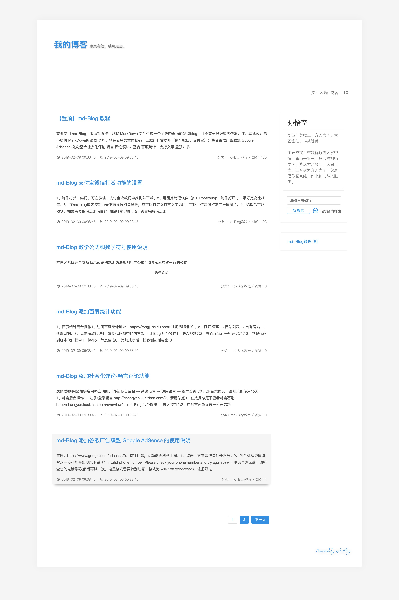

md-Blog 说明文档
欢迎
功能特色
运行环境
安装
初始化
使用
修改/忘记密码
博客设置
添加视频播放
添加音频播放
添加百度统计
谷歌广告联盟
畅言评论
代码块
支付宝/微信打赏
数学公式和数学符号
Github 彩带
常用 MarkDown 编辑器推荐
目录说明
Tips
系统更新
二次开发
鸣谢
本书使用 GitBook 发布
初始化
# 初始化
启动你的运行环境；
解压/上传文件夹到站点根目录；
输入你的网址进行登录，初次使用会进行密码初始化操作；
进入后台，进行站点配置修改，保存后点击
全站静态生成
；
很好，进入你的站点首页，恭喜你拥有了一个
md-Blog
博客。

results matching "
"
No results matching "
"